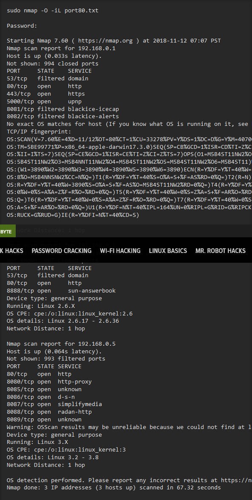
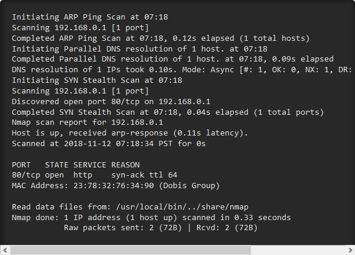

Use MDK3 for Advanced Wi-Fi Jamming
You may have heard of a signal jammer before, usually referring to a device that blasts out a strong enough radio signal to drown out the reception of nearby devices like cell phones. Purpose-built jammer hardware is outright illegal in many countries, but Wi-Fi is vulnerable to several different jamming attacks that can be done with Kali Linux and a wireless network adapter.
Traditional signal jamming has been a cat and mouse game of detecting and disabling signals an opponent is using to communicate. Cutting off a target's ability to communicate leaves them isolated and vulnerable, making jamming these signals a top priority in modern day electronic warfare. Countries today have developed capabilities to jam and spoof cell phones, GPS, Wi-Fi, and even satellite links.
Different Types of Jamming
There are two main types of jammers: elementary and advanced. Here, we'll be discussing elementary Wi-Fi jamming, focusing on unencrypted management frames. Elementary jammers can be broken into two main types: proactive and reactive. The first type, a proactive jammer, is one that continuously functions whether there is traffic on a network or not. We'll be using MDK3 as a deceptive jammer, which injects normal-seeming packets that have a malicious effect on the network.
DJammers used in electronic warfare typically require equipment that overwhelms the signal of the target with radio energy, making it impossible to distinguish between the signal and the noise being introduced to the channel the target is using to communicate. This kind of jamming is popular because it works, but it also requires specialized equipment that is banned or heavily regulated in most countries.
Deauthentication Packets
The most common way this sort of attack is done is with deauthentication packets. These are a type of "management" frame responsible for disconnecting a device from an access point. Forging these packets is the key to hacking many Wi-Fi networks, as you can forcibly disconnect any client from the network at any time. The ease of which this can be done is somewhat frightening and is often done as part of gathering a WPA handshake for cracking. Aside from momentarily using this disconnection to harvest a handshake to crack, you can also just let those deauths keep coming, which has the effect of peppering the client with deauth packets seemingly from the network they are connected to. Because these frames aren't encrypted, many programs take advantage of management frames by forging them and sending them to either one or all devices on a network.
After grabbing the IP address and taking note of the port numbers that are open, further Nmap scans can reveal the operating system (-O) being used to host a remote website.
Finally, we can even learn about the versions of software running on the ports we find open. If we see one that is vulnerable to a known attack, this could make our job on the network much easier. Using the IP address we discovered earlier, we can run another scan with -sV that reveals that httpd 2.0 is being used on the target machine.
These details combined — the IP address of a remote website or server, the operating system running on the device, and the version of any application running on open ports we discover — is everything a hacker needs to get started attacking devices on a network.
Dissasociation Packets
Disassociation packets are another type of management frame that is used to disconnect a node (meaning any device like a laptop or cell phone) from a nearby access point. The difference between deauthentication and disassociation frames is primarily the way they are used. An AP looking to disconnect a rogue device would send a deauthentication packet to inform the device it has been disconnected from the network, whereas a disassociation packet is used to disconnect any nodes when the AP is powering down, rebooting, or leaving the area. Different networks may be equipped with different countermeasures, so deauthentication itself may not work. In fact, WPA3 protects against this attack, as do some types of WPA2. According to the Wi-Fi Alliance website:
Step 1 : MDK3 vs. Aireplay-ng
To run a basic scan, we can identify an IP address of interest to run the scan against. One of the most basic but informative scans is to run Nmap, specify a target IP address, and then type -A to enable OS detection, version detection, script scanning, and traceroute.
Even against a single target, a basic scan can yield a lot of information. Here, we simply ran the scan on the IP address for WonderHowTo.com. This can be run against a device on your local network, like a router, or a remote server, like the one hosting WonderHowTo.com.
Step 2 : Calculate the Subnet & Scan a Range to Discover Devices
In order to identify other devices on a local network, it's useful to calculate the subnet range. This is the range of possible IP addresses given out to devices on a network, and knowing it allows you to scan through all the possible IP addresses a device on the network could have.
A handy tool to do this for you is IPcalc. This tool will take your IP address (which is easy to find by typing ifconfig or ip a in a terminal window) and calculate the subnet range based on it. Doing so will give you a number like "192.168.0.0/24," which specifies a range of IP addresses. In the example below, the subnet is calculated as 127.0.0.0/24.

In order to run a scan including information about the services running on devices we find, we can open a terminal window and type the following command, adding in your network range where I use "172.16.42.0/24" as an example. The scan is a little slow, so you can also use an -F flag instead of the -A to do a faster scan of the most common ports.
We're basically running Nmap with no arguments except the -A flag. We should expect to see an output like above, showing discovered devices and the services running on them.
Another handy tool for network discovery is arp-scan, which can sometimes show devices that Nmap misses. We can use Nmap to conduct an ARP scan with the -PR request, which is quite fast and aggressive at bringing back online hosts.
Step 3 : Create a Target List of Active Hosts
Now we can calculate all the possible IP addresses on the local network and discover them either with a -F (fast) scan, by running Nmap with no arguments but the -A flag for a slower scan with more info, or with a -PR scan capable of quickly sweeping a local network for active hosts.
Finally, if you want to create a TXT file of hosts you discovered, you can use the command seen below to build a list to avoid needing to scan the entire network each time we run a subsequent scan. For instance, to scan for devices with a port 80 open and save them to a list, we can use some Linux tools and the -oG "greppable output" flag to help us cut through the output Nmap provides.
By running nmap -p 80 -oG - 192.168.0.0/24 — with the network range substituted for yours — you can add | awk '/80\/open/ {print $2}' >> port80.txt to output the IP addresses belonging to discovered devices to a TXT file called "port80.txt."
Here, the awk command is looking for lines containing the port number and the result "open," with the second string in each line (in this case, the IP address) saved by the cat command to a new file called port80.txt
Step 4 : Identify the Operating System on Discovered Devices
One of the most helpful things to know about a device we discover on a network is the operating system it's running. Here, we can take the TXT target list we populated in the previous step and run an operating system scan, which requires root privileges. We can use the -O flag to run an operating system scan, and the -iL flag to tell Nmap we want to read from a TXT file of target hosts.
This tactic allows us to get as much information as possible about the operating system from whatever list of targets we want to run it against, whether internal network targets or a list of website IP addresses.
The next step is discovering the versions of the applications running on open ports. This may show us a port that is running software that is out of date and has a known vulnerability. To run this scan, you can use the -sV flag against a target.
Here, we've found some very specific information about our host, allowing us to potentially identify an attack against the software listening behind the port.
Step 5 : Advanced Scans & Workarounds
There may be some circumstances where you're having a difficult time scanning a network because the ping sent by Nmap are dropped by a firewall on the router. This can make it look like no devices are up, when you know they are. To avoid this, you can include the -Pn flag, which will drop the ping and sometimes allow you to connect directly to devices and get a response.
If you're scanning on a network you don't want to be detected on, you can perform a decoy scan with the -D flag to make it more difficult to detect who is conducting the scan on the network. An example would look like the command below, and requires root privileges.

If you need more information about what's happening, you can strike a key while the scan is progressing to get some information about how it's proceeding or add a -v to increase the verbosity (how much information the script gives). Generally, you can keep adding more v's to the -v according to how frustrated or angry you get to learn more information about what's happening.
Here, we can see the reason reported for the port 80 being up, allowing us to delve deeper into what parts of a scan a device may be replying to or ignoring. Be warned, you will see everything the scan is doing, and this can produce a lot of output on a complicated scan.
Nmap Lights Up the Dark
Finding your way around a network for the first time can be a harrowing experience for a beginner, whether you're learning about network exploitation for the first time or simply trying to find your router.
Keep in mind, while networks scans are fine (and a great idea) to run on your own network to see what's connected, this kind of scan may not be welcome on your work network or another network you don't own. If your employer looks for suspicious behavior on their networks, extensively scanning can be easily interpreted as the threatening behavior if you have no good reason to be performing the scan.
One of the most powerful things about Nmap is that it's scriptable with options like -oG and can be used to feed into other tools, so if you've ever imagined building a tool that needs to be aware of other devices on the same network, Nmap might be just what you're looking for.